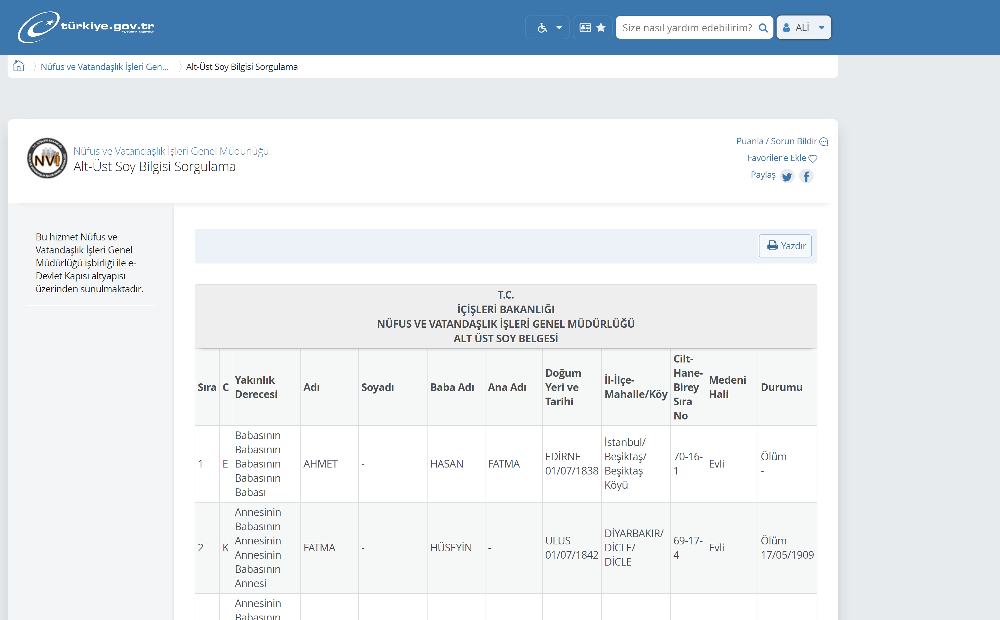
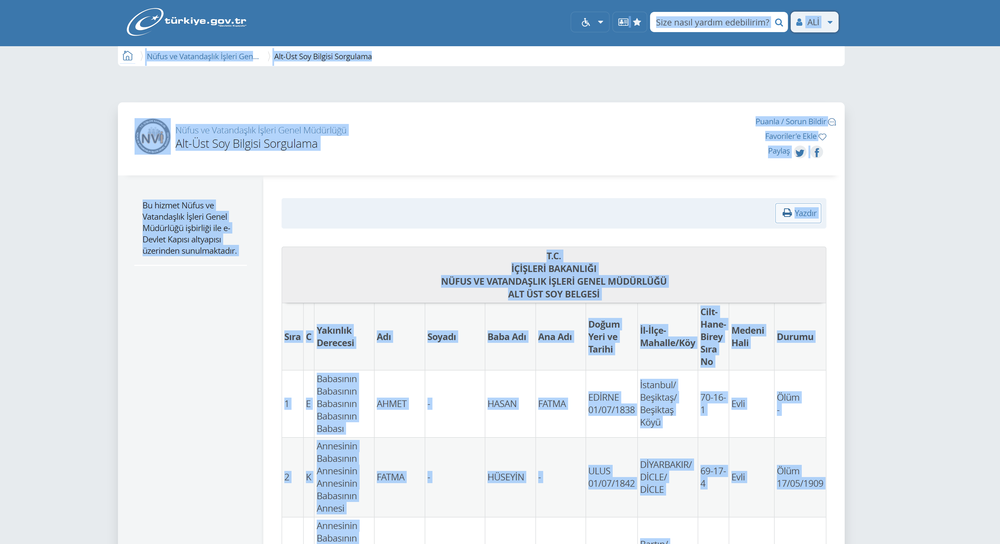

| Soy ağacınızı çıkarmak için
E-Devlet soyağacı görüntüleme sayfasında sırasıyla CTRL ve A tuşlarına birlikte basın (veya mousela veriyi seçin) Sonrasında CTRL ve C tuşlarına basın (veya sağa tıkladıktan sonra kopyala seçeneğini tıklayarak veriyi kopyalayın.) Yukarıdaki boş alana yapıştırın. |
|  |  |
| SoyHaritam.com anında Soy Haritanızı çizsin! |
| *Hiçbir yerde verileriniz kaydedilmemektedir. İstemci tarafında çalışır. Ctrl+U kodları görmenize yeter. Açık kaynaktır. **Soyharitanız ekrana sığmazsa tarayıcıdan büyüteç işaretiyle uzaklaştırma yapabilirsiniz |